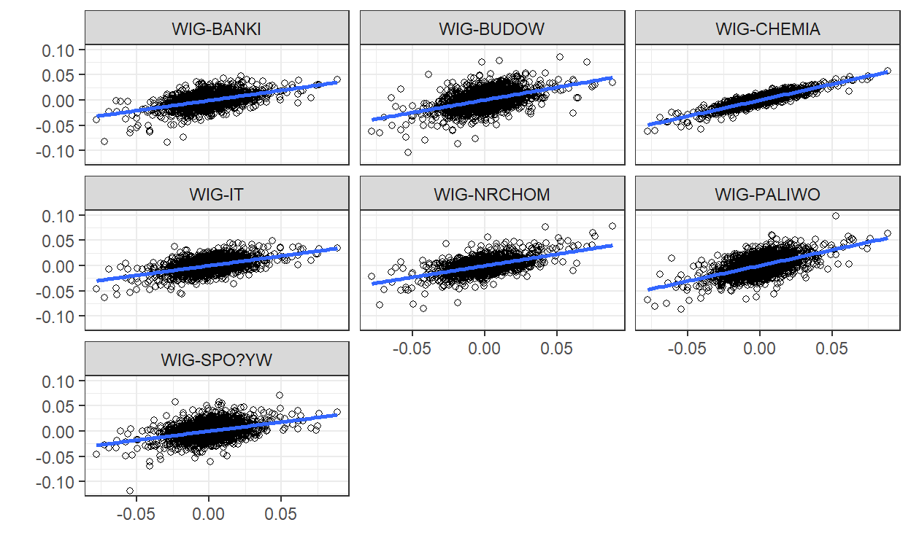

A short description of the post.
##1.1 Teoria
Podstawowym zadaniem regresji liniowej jest opisanie zachowania procesu na podstawie danych obserwacji. Kiedy za?o?eniem jest opis g??bszej zale?no?ci istnieje mo?liwo?? u?ycia wi?kszej ilo?ci r?wna? by wyja?ni? to zjawisko. Do tego celu mo?e zosta? u?yty model SUR (Seemingly Unrelated Regression).
###Model SUR
Za?o?eniem modeli SUR jest przedstawienie zjawiska za pomoc? osobnych modeli w kt?rym ka?dy ma jednakow? zmienn? zale?n? oraz r??ne zmienne obja?niaj?ce. Model mo?e by? estymowany r?wnanie po r?wnaniu za pomoc? KMNK je?eli b??dy z poszczeg?lnych r?wna? nie s? skorelowane oraz ka?de r?wnanie posiada ten sam regresor.
Pojedynczy model SUR ma posta?:
\[ y_{i} = X_{i}\beta_{i}+\varepsilon_{i}\]
gdzie \(y_{i}\) jest wektorem o wymiarach \((N\times 1)\) \(X_{i}\) jest macierz? \((N\times K)\), \(\beta_{i}\) jest wektorem element?w \((K\times 1)\). Co mo?na zapisa? nast?puj?co:
\[\begin{equation} \begin{pmatrix} y_{1}\\ y_{2}\\ \vdots\\ y_{m} \end{pmatrix} = \begin{pmatrix} X_{1} & 0 & \cdots & 0 \\ 0 & X_{2} & \cdots & 0 \\ \vdots & \vdots & \ddots & \vdots\\ 0 & 0 & \cdots & X_{m} \end{pmatrix} \begin{pmatrix} \beta_{1}\\ \beta_{2}\\ \vdots\\ \beta_{M} \end{pmatrix} + \begin{pmatrix} \varepsilon_{1}\\ \varepsilon_{2}\\ \vdots\\ \varepsilon_{m} \end{pmatrix} \end{equation}\]
Za?o?enia modelu:
\(E(\varepsilon| X_{1},...,X_{m})=0\) - nielosowo??
\(E(\varepsilon\varepsilon^T| X_{1},...,X_{m})=\Omega\)
\(E(\varepsilon_{i,j}\varepsilon_{j,s}| X_{1},...,X_{m})=\begin{cases} \sigma_{i,j} \text{ gdy } t = s\\ 0 \text{ gdy } t \neq s \end{cases}\) - skorelowanie dzisiejszych b??d?w ale brak korelacji dzisiejszych z jutrzejszymi.
###CAPM
Model wyceny aktyw?w kapita?owych CAPM (Capital Asset Pricing Model) okre?la, ile na rynku b?d?cym w r?wnowadze powinna wynosi? stopa zwrotu akcji. A zatem model ten mo?na r?wnie? nazwa? modelem r?wnowagi rynku kapita?owego, kt?ry ma nast?puj?c? posta?:
\[R(E_{r}) = R_{F}+R_{M}(E)-R_{F}\beta_{j}\]
Podstaw? teoretyczn? jest za?o?enie, ?e ryzyko systematyczne danego waloru wyja?nia nadwy?ka stopy zwrotu portfela rynkowego ponad stop? zwrotu woln? od ryzyka. W przypadku z u?yciem modeli SUR b?dziemy badali to, ?e ryzyko gie?dowe jest zwi?zane tylko i wy??cznie z ryzykiem portfela kapita?owego:
\[(R_{it}-r) = a_{i} + \beta_{i}(R_{Mt}-r)+\varepsilon_{t}\] gdzie \(r\) to nadwy?kowa stopa zwrotu, wi?ksza od stopy wolnej od ryzyka.
###Test GRS
W celu weryfikacji efektywno?ci portfeli testowana jest hipoteza:
\[H_{0}: \alpha_{i} = 0 \quad \forall_{i}=1,...,N\]
Do testowania tej restrykcji wykorzystano statystyk?:
\[ GRS = \left(\frac{T}{N}\right)\left(\frac{T-N-K}{T-K-1}\right)\left(\frac{\alpha^T\hat\Sigma^{-1}\alpha}{1+\mu^T\hat\Omega^{-1}\mu}\right) \sim F(N, T-N-K)\]
gdzie:
\(T\) - liczba obserwacji,
\(N\) - liczba r?wna? w modelu SUR,
\(K\) - liczba regresor?w (dla CAPM \(K\)= 1),
\(\alpha\) - wektor \(\alpha\) z wyestymowanych modeli,
\(\hat\Sigma\) - zgodny estymator macierzy kowariancji reszt modeli,
\(\hat\Omega\) - ocena macierzy wariancji i kowariancji analizowanych czynnik?w,
\(\mu\) - estymator wektora warto?ci oczekiwanych st?p zrotu z portfela g??wnego.
##1.2 Obliczenia
###Dane
Dane u?yte w modelu dotycz? indeksu gie?dowego WIG oraz siedmiu indeks?w bran?owych: bankowego, budowlanego, chemicznego, informatycznego, nieruchomo?ci, paliwowego oraz spo?ywczego.
| WIG | WIG-BANKI | WIG-BUDOW | WIG-CHEMIA | WIG-IT | WIG-NRCHOM | WIG-PALIWO | WIG-SPO?YW |
|---|---|---|---|---|---|---|---|
| 2490.18 | 3862.65 | 1576.69 | 21769.8 | 866.04 | 1223.02 | 1633.38 | 1334.27 |
| 2528.22 | 3887.54 | 1579.71 | 21999.1 | 864.97 | 1280.34 | 1665.99 | 1310.29 |
| 2664.90 | 4020.69 | 1609.64 | 22719.6 | 877.44 | 1342.33 | 1703.81 | 1342.33 |
| 2620.41 | 4034.05 | 1602.93 | 22547.3 | 872.63 | 1308.07 | 1682.16 | 1316.51 |
| 2724.05 | 4051.97 | 1612.27 | 22948.5 | 881.64 | 1303.98 | 1705.82 | 1329.70 |
| 2676.26 | 4026.47 | 1595.55 | 22716.1 | 881.94 | 1282.67 | 1680.12 | 1336.52 |
W zbiorze danych obecne s? 2433 obserwacje dziennych cen zamkni?cia obejmuj?cych okres od 02-03-2009 do 16-11-2018.
Do modelowania u?yte zostan? logarytmiczne stopy zwrotu liczone wzorem:
\[ r_{l} = ln(\frac{K_{t}}{K_{t-1}}) \] gdzie:
\(r_{t} \text {- logarytmiczna stopa zwtotu}\)
\(K_{t} \text {- kurs zamkni?cia akcji.}\)Pomniejszone zostan? o 5% stop? woln? od ryzyka.
| WIG | WIG-BANKI | WIG-BUDOW | WIG-CHEMIA | WIG-IT | WIG-NRCHOM | WIG-PALIWO | WIG-SPO?YW |
|---|---|---|---|---|---|---|---|
| 0.0150216 | 0.0062842 | 0.0017747 | 0.0103390 | -0.0013752 | 0.0456636 | 0.0196292 | -0.0182747 |
| 0.0525121 | 0.0335381 | 0.0186304 | 0.0320876 | 0.0141749 | 0.0471424 | 0.0223085 | 0.0240195 |
| -0.0169746 | 0.0031784 | -0.0043162 | -0.0077516 | -0.0056358 | -0.0259930 | -0.0129271 | -0.0195615 |
| 0.0386501 | 0.0042935 | 0.0056710 | 0.0174984 | 0.0101333 | -0.0032705 | 0.0138284 | 0.0098302 |
| -0.0178383 | -0.0064520 | -0.0105635 | -0.0103175 | 0.0002013 | -0.0166162 | -0.0153196 | 0.0049770 |
| 0.0347104 | 0.0056558 | 0.0237287 | 0.0138541 | 0.0133981 | 0.0161006 | -0.0042901 | 0.0046159 |
Tak przygotowanie dane wykorzystane zostan? do budowy modeli.
##Model
Poszczeg?lne modele z podzia?em ze wzgl?du na indeks bran?owy prezentuj? si? nast?puj?co:
| Estimate | Std. Error | t value | Pr(>|t|) | |
|---|---|---|---|---|
| (Intercept) | -0.0005553 | 0.0002113 | -2.628549 | 0.008629 |
| WIG | 0.4021302 | 0.0139277 | 28.872740 | 0.000000 |
| Estimate | Std. Error | t value | Pr(>|t|) | |
|---|---|---|---|---|
| (Intercept) | 0.0003927 | 0.0002889 | 1.359604 | 0.1740814 |
| WIG | 0.5013547 | 0.0190431 | 26.327344 | 0.0000000 |
| Estimate | Std. Error | t value | Pr(>|t|) | |
|---|---|---|---|---|
| (Intercept) | 0.0000574 | 0.0000939 | 0.6118739 | 0.5406784 |
| WIG | 0.6364715 | 0.0061879 | 102.8570762 | 0.0000000 |
| Estimate | Std. Error | t value | Pr(>|t|) | |
|---|---|---|---|---|
| (Intercept) | 0.0000947 | 0.0002039 | 0.4644354 | 0.6423774 |
| WIG | 0.3847856 | 0.0134390 | 28.6320544 | 0.0000000 |
| Estimate | Std. Error | t value | Pr(>|t|) | |
|---|---|---|---|---|
| (Intercept) | -0.0000673 | 0.0002097 | -0.3209396 | 0.7482838 |
| WIG | 0.4555218 | 0.0138266 | 32.9454324 | 0.0000000 |
| Estimate | Std. Error | t value | Pr(>|t|) | |
|---|---|---|---|---|
| (Intercept) | 0.0002887 | 0.0002728 | 1.058132 | 0.2901003 |
| WIG | 0.6180553 | 0.0179875 | 34.360293 | 0.0000000 |
| Estimate | Std. Error | t value | Pr(>|t|) | |
|---|---|---|---|---|
| (Intercept) | 0.0001629 | 0.0002612 | 0.6234985 | 0.5330155 |
| WIG | 0.3591138 | 0.0172207 | 20.8535636 | 0.0000000 |
Wykresy zale?no?ci liniowych poszczeg?lnych portfeli:

Na podstawie wyestymowanych modeli przygotowano odpowiednie wsp??czynniki do testu GRS.
Wektor \(\alpha\):| a | |
|---|---|
| WIG-BANKI | -0.0005553 |
| WIG-BUDOW | 0.0003927 |
| WIG-CHEMIA | 0.0000574 |
| WIG-IT | 0.0000947 |
| WIG-NRCHOM | -0.0000673 |
| WIG-PALIWO | 0.0002887 |
| WIG-SPO?YW | 0.0001629 |
Macierz \(\Omega\):
| WIG-BANKI | WIG-BUDOW | WIG-CHEMIA | WIG-IT | WIG-NRCHOM | WIG-PALIWO | WIG-SPO?YW | |
|---|---|---|---|---|---|---|---|
| WIG-BANKI | 0.0001457 | 0.0000837 | 0.0000797 | 0.0000623 | 0.0000803 | 0.0000849 | 0.0000635 |
| WIG-BUDOW | 0.0000837 | 0.0002607 | 0.0001019 | 0.0000706 | 0.0000864 | 0.0001134 | 0.0000739 |
| WIG-CHEMIA | 0.0000797 | 0.0001019 | 0.0001147 | 0.0000754 | 0.0000878 | 0.0001325 | 0.0000734 |
| WIG-IT | 0.0000623 | 0.0000706 | 0.0000754 | 0.0001351 | 0.0000637 | 0.0000828 | 0.0000552 |
| WIG-NRCHOM | 0.0000803 | 0.0000864 | 0.0000878 | 0.0000637 | 0.0001547 | 0.0000955 | 0.0000687 |
| WIG-PALIWO | 0.0000849 | 0.0001134 | 0.0001325 | 0.0000828 | 0.0000955 | 0.0002689 | 0.0000774 |
| WIG-SPO?YW | 0.0000635 | 0.0000739 | 0.0000734 | 0.0000552 | 0.0000687 | 0.0000774 | 0.0001956 |
Macierz \(\Sigma\):
| WIG-BANKI | WIG-BUDOW | WIG-CHEMIA | WIG-IT | WIG-NRCHOM | WIG-PALIWO | WIG-SPO?YW | |
|---|---|---|---|---|---|---|---|
| WIG-BANKI | 0.0001085 | 0.0000373 | 2.08e-05 | 0.0000267 | 3.82e-05 | 0.0000277 | 0.0000303 |
| WIG-BUDOW | 0.0000373 | 0.0002029 | 2.84e-05 | 0.0000262 | 3.38e-05 | 0.0000421 | 0.0000325 |
| WIG-CHEMIA | 0.0000208 | 0.0000284 | 2.14e-05 | 0.0000190 | 2.11e-05 | 0.0000419 | 0.0000208 |
| WIG-IT | 0.0000267 | 0.0000262 | 1.90e-05 | 0.0001011 | 2.33e-05 | 0.0000281 | 0.0000234 |
| WIG-NRCHOM | 0.0000382 | 0.0000338 | 2.11e-05 | 0.0000233 | 1.07e-04 | 0.0000307 | 0.0000310 |
| WIG-PALIWO | 0.0000277 | 0.0000421 | 4.19e-05 | 0.0000281 | 3.07e-05 | 0.0001811 | 0.0000263 |
| WIG-SPO?YW | 0.0000303 | 0.0000325 | 2.08e-05 | 0.0000234 | 3.10e-05 | 0.0000263 | 0.0001659 |
Przy u?yciu statystyki GRS opisanej we wcze?niejszym rozdziale otrzymano nast?puj?ce wyniki:
| GRS_stat | F_stat | p.value |
|---|---|---|
| 1.993153 | 2.013353 | 0.0525059 |
Dla obliczonych warto?ci nie ma podstaw by odrzuci? \(H_{0}:\) model ten generuje efektywne portfele, mimo ?e warto?? p-value przekroczy?a poziom \(0,05\) w niewielkim stopniu. Na rynku spe?niony jest model wyceny CAPM i mo?na z jego pomoc? wycenia? poszczeg?lne akcje z indeks?w bran?owych znaj?c stopy zwrotu indeksu g??wnego.